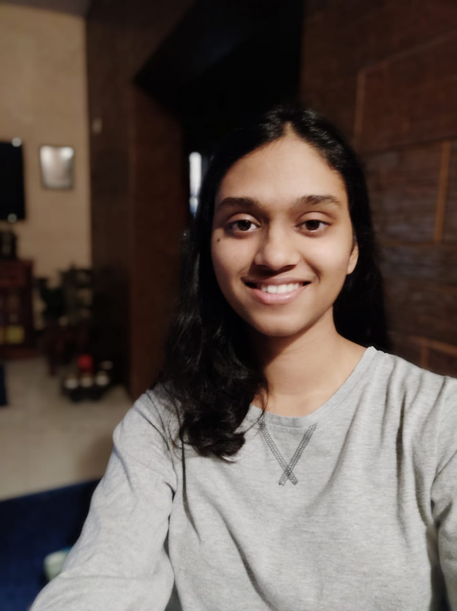

About me..
Bengaluru girl! I'm a typical ambivert and I love learning new things everyday.
I spend a lot of time coding and exploring development skills on the internet!
My parents are my Role Models and I aspire to make a difference in the lives of living things around the planet ! Also, a space freak who loves stargazing :).

My Philosophy
I believe that half the battle is won when you believe in yourself Self-onfidence can determine the way you think of yourself and henceforth how others think of yourself.

Academics
I studied CBSE till class 12 in DPS, Bangalore North and I scored 95% in my class 12 board exams ! I got 1063 KCET rank and my hard work helped me achieve my dreams! I've always wanted to study computer science and explore topics such as data modelling in AI.

Activities
When I joined MSRIT , I was enthusiastic about joining a lot of clubs !
I joined Team Laasya , the only contemporary dance team of MSRIT !
I got the oppurtunity to perform live on Karnataka Rajyotsava, and till date that was the happiest moments I've had in college! My joy knew no bounds!
On the technical hand, I'm the payload subsystem head of STARDUST RIT, The Student Satellite Club of MSRIT ! . We're a team of space enthusiasts with a primary goal to build and launch a satellite under the guidance of ISRO URSC.

Hobbies
I am a dancer , I spend a lot of time honing my Bharatnatyam dance skills and I aspire to some day give my Arangetram Performance live!
I also Love playing the violin! Currently in 3rd grade as per Trinity Certification.
I love to talk about space and use a lot of my free time to enhance my knowledge in the vast domain!

Ready to tell your story? Let's get in touch!
Drop off a mail and lets get started!
Follow me!